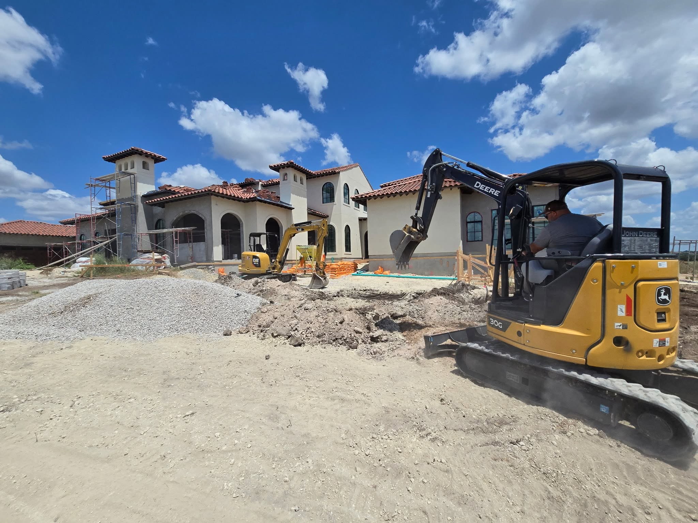

Licensed & Insured
You get the peace of mind that comes with a properly licensed and insured crew on your property.
A reliable, skilled, local family business serving San Antonio and the surrounding areas.

R&G C. Excavation LLC is a reliable, skilled, local, licensed and insured family-owned company serving San Antonio and the surrounding areas. Founded by Marcelino Tapia, we built this business on a simple idea: do honest, precise work and treat every customer's project like it is our own.
Whether you are starting a new project or stuck with an ongoing plumbing issue, our experienced team is committed to delivering efficient, high-quality results that meet your specific needs. From site prep and grading to sewer lines, septic, and underground plumbing repair, big or small, we dig it all.
We are proud to serve our neighbors across the San Antonio area, and we are glad to work with you in English or Spanish.
You get the peace of mind that comes with a properly licensed and insured crew on your property.
We are a local family business, not a faceless outfit. Your project gets our name and our care.
We work with you in English or Spanish so the details of your project are always clear.
Reach out for a free quote and let's get your project moving.